Incredible India
Must See Temples in Madhya Pradesh
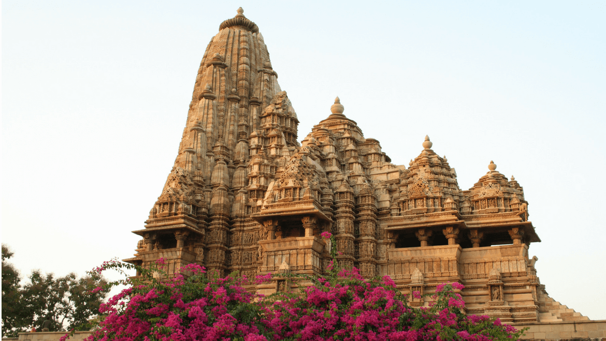There’s always a time in our life when we look for a vacation to seek blessings of God, console our depressed souls and find the strength to face all the challenges. And trust me this once in a lifetime experience can be rejuvenating and it may change the course of your life. So, If you’re spiritually inclined and seeking a tour to reconnect with God, and fill your mind with positivity, then Madhya Pradesh is a must visit place for you. Bestowed with the shaktipeethas (holy places of cosmic power) and jyotirlingas (devotional objects representing the Supreme God Shiva), the state is blessed by both Shiva and Shakti. There are oodles of shrines in Madhya Pradesh, and these are supposed to be the places where the divinities are believed to have descended. Most of the temples in Madhya Pradesh have grand architecture and unique stories to tell.
Mahakaleshwar Jyotirlinga, Ujjain
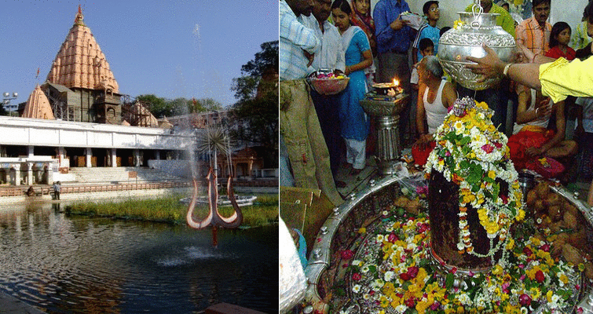The holy town of Ujjain holds a great religious significance for Hindus as it resides one of the Jyotirlinga called Mahakaleshwar. Located on the bank of Rudrasagar Lake, the temple is also one of the 18 maha shakti peetham. According to Shiv Purana, Ujjain was the place where years back Lord Shiva appeared in his mahakala form to vanquish a demon called Dushana, who used to torture people of Ujjain city. After killing Dushana, Lord Shiva took the form of jyotirlinga and started residing in this holy city. The temple looks its best during Sawan, and Nag panchami festival as this is when the temple structure is decorated with lights and flowers. Mahakaleshwar is the only jyotirlinga where its lingam faces south, and it also has a shree yantra inscribed on the ceiling above the grabhagriha. During the Maha Shivaratri festival, a huge fair is held and the celebrations, worship go on through the night. ‘Bhasm-Aarti’ is the main highlight of the temple, performed every morning, during which the shivlinga is bathed with ash from a fresh funeral pyre.
Situated near the tank of the Mahakaleshwar Temple, Bada Ganesh Ka Mandir is famed for a large red ornate statue of Lord Ganesh. Flanking the deity on both sides are Riddhi & Siddhi, goddesses signifying sanctity, fulfillment, prosperity and riches. The temple also harbours a bronzed idol of a five-faced, panchmukhi, Hanuman. Next to the Hanuman idol is the baby Krishna in the arms of his mother, Yashodhara, with a background of black serpents with extended hoods. Bada Ganesh Ka Mandir authority is also running a training centre to impart education on astrology and Sanskrit language.
Bhairav Parvat, Ujjain
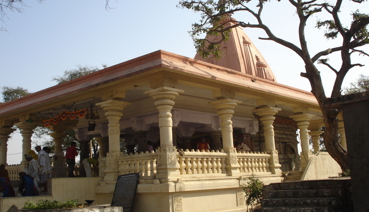Reckoned as one of the one of the 51 shakti peethas of Goddess Durga, Bhairav Parvat temple is a highly revered pilgrimage in Madhya Pradesh. The temple located on the banks of the river shipra on top of Bhairav hills. According to legends, during the event when Lord Shiva was carrying the corpse of his wife Sati, her upper lip feel in the same place where the temple currently stands, and the deity is worshipped here as Avanti (Modest) and Shiva as Lambakarna (Long eared one). The deity is also known to the local devotees as Garhkalika.
Shri Dwarkadhish Gopal Mandir, Ujjain
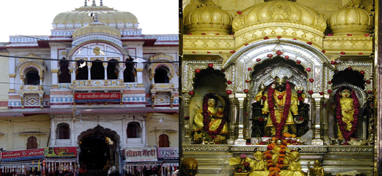Situated in the historic city of Ujjain, Gopal temple is sacred to Lord Krishna. The temple was built during 1848-56 and is dedicated to Dwarkadheesh, the tutelary deity of the Scindia family. The use of marble in its architecture reminds of excellent architectural skills of the Maratha. The inner sanctum of the temple houses a beautiful 2 feet statue of Lord Krishna in silver form.
Kal Bhairav temple, Ujjain
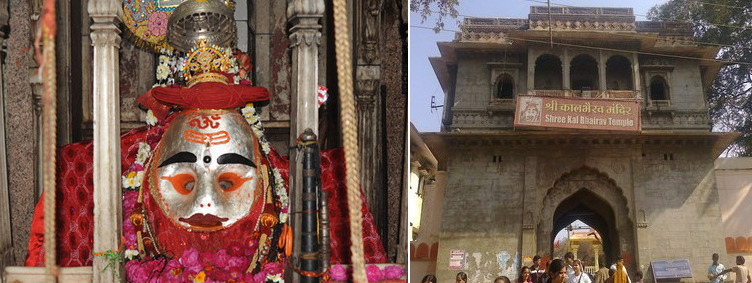Amongst the famous and highly revered temple of Ujjain, Kal Bhairav is located on the bank of river Shipra. The temple is sacred to the guardian of the city, Kal Bhairav, who is also an incarnation of Lord Shiva or Mahakal. An obscured King Bhadrasen built the initial structure of the temple, later it was destroyed, and all that left was the images of Shiva, Parvati, Vishnu and Ganesha belonging to the Parmara period. The current structure of the temple was built by Mahadaji, the Maratha king, to commemorate his victory in the Third Battle of Panipat (1761 CE). You may find it little astonishing but at the Shri Kaal Bhairav temple liquor is offered as ‘chadhava’ (offerings). The priest of the temple opens the bottle and put half of the contents into a shallow plate which is placed near the mouth of the idol. Slowly, the liquor level starts going down and you can see this miracle happening right in front of your eyes.
Chintaman Ganesh Temple, Ujjain
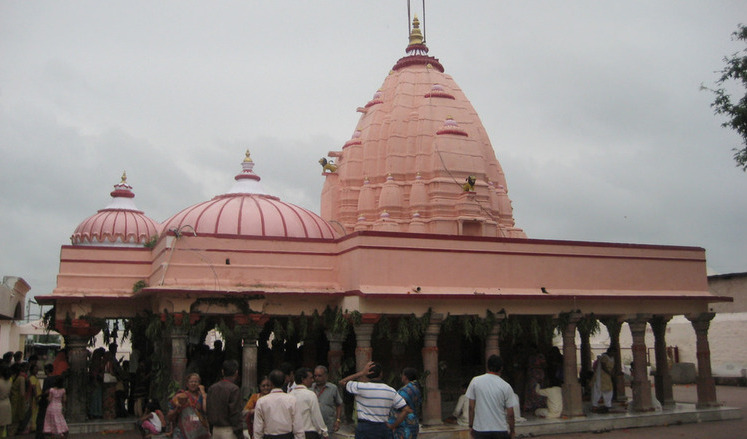Situated on the bank of Kshipra river, Chintaman Ganesh is one of the oldest and biggest Ganesh temples in Ujjain. Devotees usually visit the temple before starting and new venture or to get rid of all the worries. Inside the temple, you will see finely-carved stone pillars and white shrine, which dates back to 11th or 12th century. There is an image of Lord Ganesh, flanked by the idols of his two wives, Ridhi, and Sidhi. The temple is mainly known for its architectural beauty and intricate designing on its walls.
Kandariya Mahadeo Temple, Khajuraho
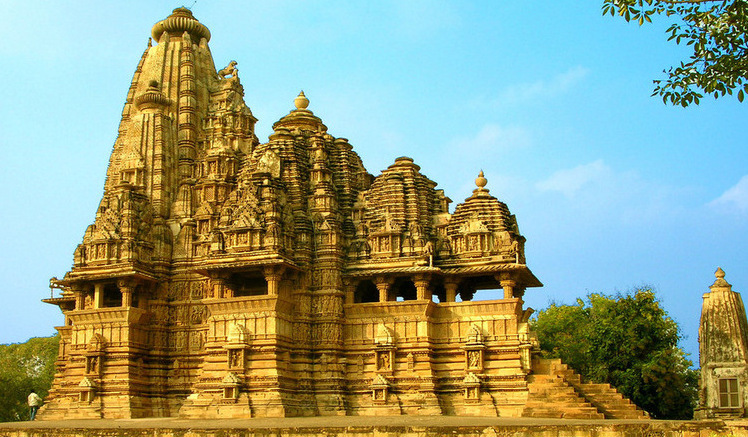The magnificent group of temples at Khajuraho, a UNESCO world heritage site, were built by the Chandela dynasty, which dominated the central India at that time. The most impressive of the temple is the Kandariya Mahadev, which represents the pinnacle of North Indian temples, art and architecture. Over 800 sculptures cover the temple depicting gods and goddess, beasts and warriors, dancers, musicians and of course the erotic sculptures. Somewhere like its exteriors, the temple interiors are equally magnificent. The dark and plain inner sanctum symbolizes a womb, and it houses a linga and all the principal objects of worship in all Shiv temples. The sanctum is entered through the richly carved wooden frame.
Adinath Temple, Khajuraho
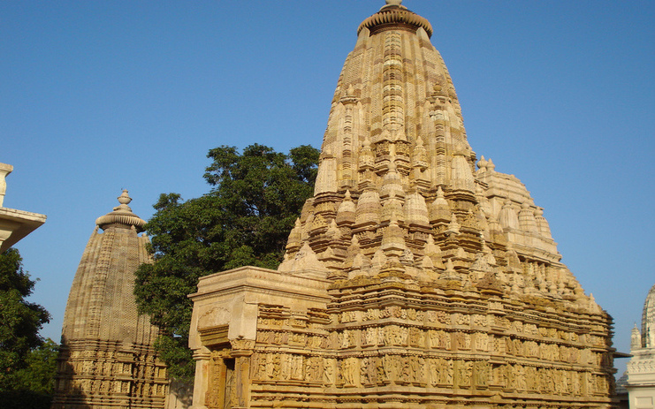Located in the eastern section of the Khajuraho temple complex, Adinath temple is adorned with some of the marvellous statues that are the finest examples of medieval Indian architecture. The temple is devoted to the first Jain Tirthankar Adinath, who is also the founder of Jainism. Main highlight of the temple is the carvings of Yakshis (female mythical beings) and Yakshas on the entire structure.
Lakshmana Temple, Khajuraho
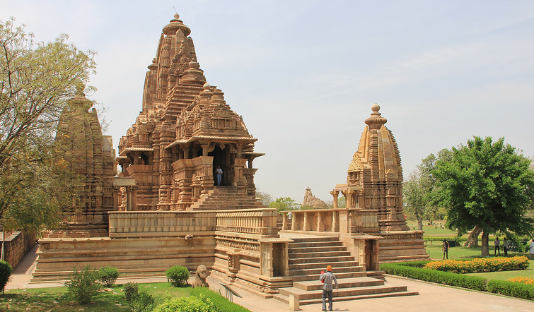Oldest and the largest temple in the western wing of Khajuraho temples, Lakshmana Temple is dedicated to Lord Vishnu. The temple is similar to Kandariya Mahadev in composition and structural embellishment, but it has its unique features. The superb ceiling of the entrance porch and the female bracket figure inside the Lakshman temple are worth special notice. The master architect and the apprentices are sculpted on the subsidiary shrine in the temple’s eastern corner. Even the adhisthana, the lowest base or the platform of the temple on which the temple stands is intricately carved.
Matangeshwar Temple, Khajuraho
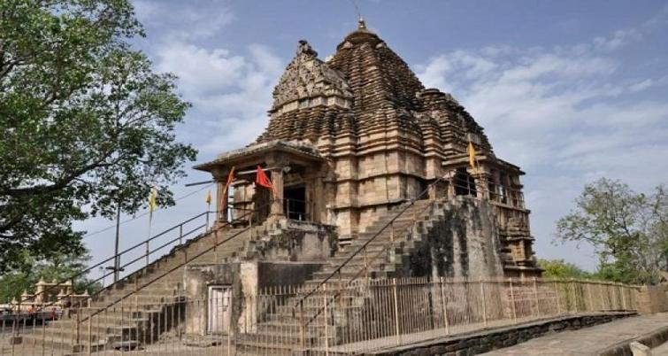Matangeshwar Temple is the only temple in Temple in Khajuraho group of temples where a fixed pattern of worship is followed and is in use almost every day. This ninth century temple features 18 feet tall lingam, 9 feet below the surface of the ground and 9 feet above the ground. Unlike other temples of Khajuraho, its exteriors are not adorned with sculptures, but the ceilings are formed of overlapping concentric courses. The best time to visit the temple is during the Shivratri festival.
Javari Temple, Khajuraho
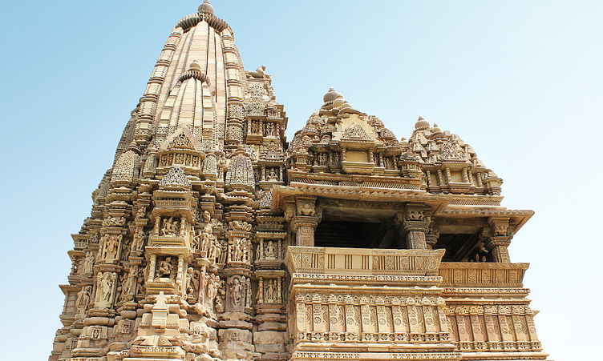Reckoned as the most beautiful temple amongst eastern group of Khajuraho temples, Javari temple was constructed between 1075 and 1100 and is famed for its ancient architecture. According to locals, the temple is named after the owner of the land as no Hindu deity has such name title. As compare to another temple, Javari is small in size and colossal is beauty. Unlike other temples, here one can find exteriors decorated with numerous complicated carvings. While in the interiors of the temple, one can see Nirandhara temple that comprises a sanctum, mandapa, portico, and vestibule.
Chaturbhuj Temple, Orchha
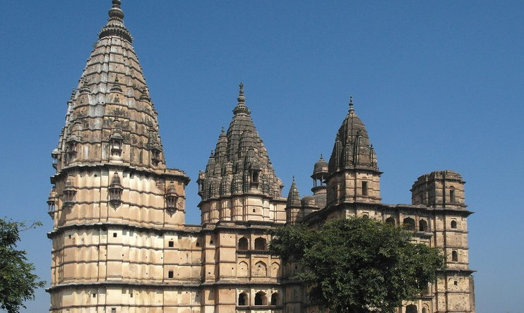A unique blend of temple and fort styles, the Chaturbhuj temple is dedicated to Lord Vishnu and has a huge hall for soaring spire and massed singing. According to the legends, the temple was originally built to house the idol of Lord Ram but it refused to budge from what was a temporary residence, that’s when an idol of Lord Vishnu, with four arms, was put in the temple, this is the reason why it is called Chaturbhuj temple. The idol of Lord Ram is currently in Ram Raja temple. To reach the temple, travellers will have to take a take a steep flight of steps, and you can see the grandeur planned by the king to house the deity. You should also look out for the hidden stairs that lead to the roof for a spectacular view of the entire area.
Harsiddhi Temple, Ujjain
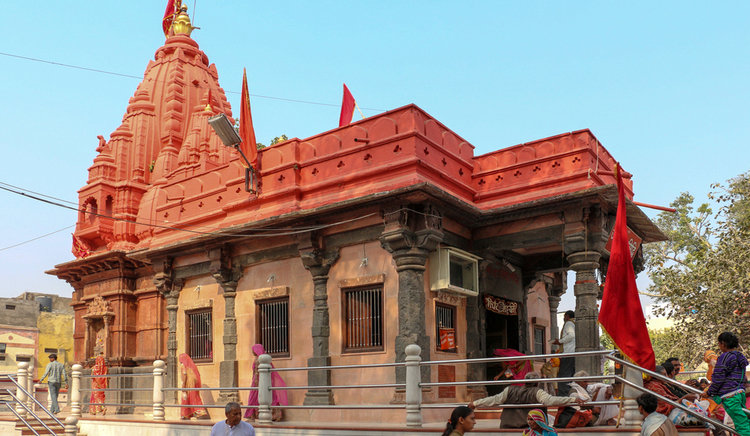One of the 51 Shaktipeeth of Mata Sati, Shri Harsiddhi temple, is a must visit on a trip to Ujjain. As per the legends, the temple came into existence when Lord Shiva was carrying the burnt body of Sati and her elbow feel on the ground, at the same place where the temple stands. The temple was built by king Vikramaditya, who used to worship here daily. In fact, King Vikramaditya was the one who invited the Harsiddhi Mata to Ujjain, and that is the reason why the goddess is also known as Vahanvati Mata. Even today, many Rajputs worship Maa Harsiddhi as their kuldevi. Inside the temple, you can see a vermilion-hued idol of Annapurna, seated between Goddesses Mahalaxmi and Mahasaraswati. Also, there is a Sri Yantra or nine triangles that represent nine names of Goddess Durga. On a visit to Harsiddhi temple, you should also go to Mahamaya temple, a tiny shrine where one can see a lamp that has been burning for ages. Dushera is the best time to visit Harsiddhi temple.
Bharat Milap Mandir, Chitrakoot
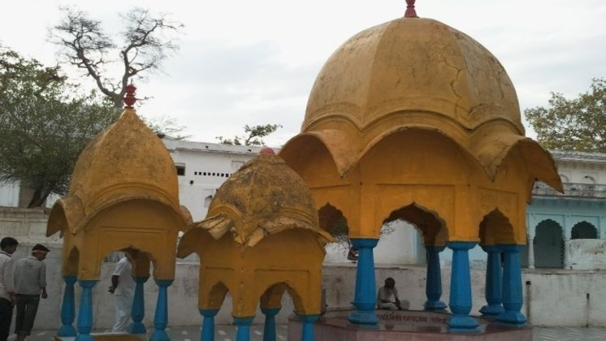As the name says, this was the place where Bharat met Lord Ram and tried convince him to return to Ayodhya. According to the mythological stories, the meeting was so emotional that even the rocks and mountains of Chitrakoot melted. Footprints Lord Ram and Bharat were imprinted on some rocks, which can still be seen in the Bharat Milap Mandir. During October and November, the temple springs to life as this is when the famous fair is organized in the temple. The temple is located on the Kamdagiri Hills, which when circumambulated (parikrama) can liberate one from all the sins.
Sati Anasuya Temple, Chitrakoot
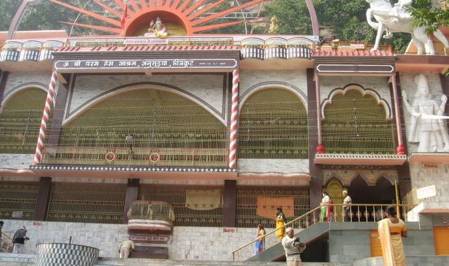Located on the bank of Mandakini River, Sati Anusuya temple is a famous ancient temple of Chitrakoot. The traces of the same can be seen in the famous epic, Ramayana. According to the mythological account, Lord Rama, along with Sita and Lakshman, visited Chitrakoot to meet Maharishi Atri and were welcomed to their house by Sage Arti, Sati Anasuya. It was the same place where Sati Anusuya explained to Sita the grandeur and importance of satitva. Currently, here one can find many temples and of course the Mandakini river stream, where people are seen taking the sacred bath. Few kilometers from the temple there is a modern temple, which is famed for its huge rocks adorned with images of Lord Shiva.
Shri Pashupatinath Temple, Mandsaur
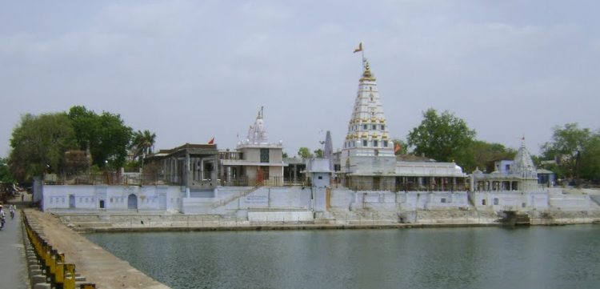Located on the bank of Shivna River, Shri Pashupatinath is amongst the famous temples of Madhya Pradesh. Principle deity of the temple is Lord Pashupatinath. The temple is famous for its unique Shiv Ling with eight faces of Lord Shiva, which is the only one of its kind in the world. Each face reveals the different phases of Lord Shiva life. Every year, during monsoon, the temple experience a unique phenomenon called “Jalaabhishek,” which means that level of Shivna river rises to such a level that it touches the holy lingam of Lord Shiv, and god is worshiped through the water.
Chausath Yogini Temple, Bhedaghat
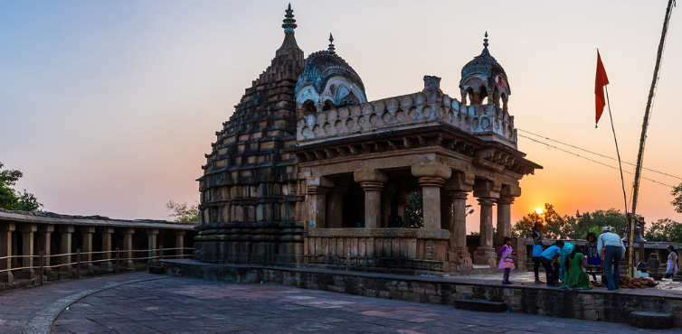Reckoned as one of the oldest temples in India, Chausath Yogini Temple is known for its exclusive architecture. Dated to 10th century, it has chausath (Hindi for 64) images of yoginis (hence the name). Also, there is a shrine, where one can see Lord Shiva, along with his wife, riding on his consort, Nandi. All the 64 temples look similar but what set them apart is the unique postures of yoginis. Since the temple is established in an open courtyard that too on a hill top, from here one can enjoy the fantastic view of the Narmada and the surrounding landscape.
Bijasan Mata Temple, Salkanpur
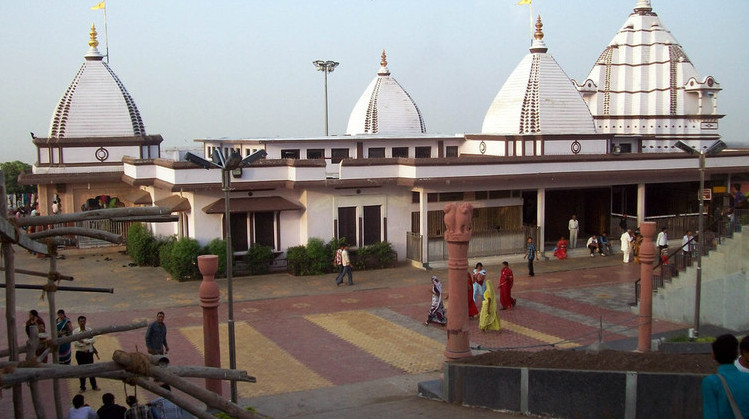One of the finest hilltop temples in Madhya Pradesh, Bijasan Devi Temple is located atop a scenic hill. The present structure of the temple is said to be built in 1920 with a distinct style of architecture. Along with the main temple, you can also visit the Border Security Force Arms Museum, which is flanked by a garden and a lake. The temple sees a massive crowd around the Navratri festival.
Lakshmi Narayana Temple, Bhopal
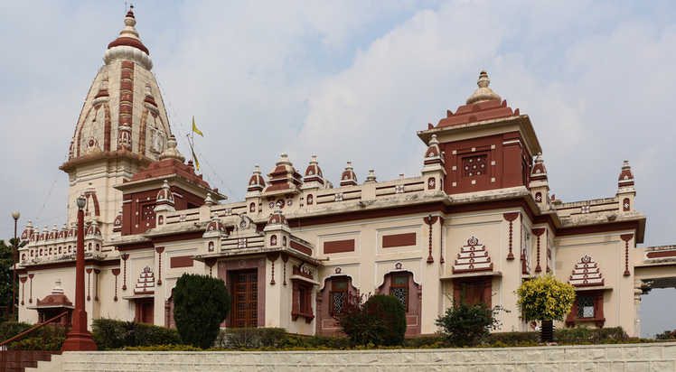Lakshmi Narayana Temple Located on Arera Hills, Lakshmi Narayana Temple is a must visit on a trip to Madhya Pradesh. Sacred to Goddess Lakshmi (the goddess of wealth) and Lord Vishnu (the preserver of the Universe), this stunning temple is built by the wealthy industrialist Birla family. The sanctum of the temple is decorated with the idols of Goddess Lakshmi, Lord Narayana, and Lord Shiva with his wife, Parvati. The religious hymns and chants, combined with the natural setting, provide a peaceful ambiance for anyone who visits there. Lakshmi Narayana Temple also has a museum, where you can find artifacts from the 12th century.
Kalmadhav, Amarkantak
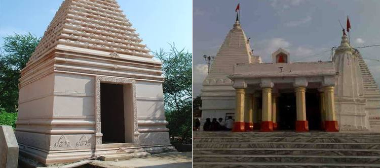One of the 51 Shaktipeethas of goddess Durga, Kalmadhav Temple is the lesser known yet a famous shrine of Madhya Pradesh. It is said that the left buttock of Goddess Sati fell at the same place where the temple currently stands. Here, the deity is known as ‘Kalmadhava’ and Lord Shiva is worshipped as ‘Asitananda’. The temple is situated on the point where the Satpura and Vindhya merge, making it an exciting destination to visit in Madhya Pradesh. The highlight of the temple is its architecture, which is made of white stone and there are small ponds all around. Since the temple is located on a scenic hilltop, so as to reach their travellers will have to climb steps.
Maihar Devi Temple, Satna
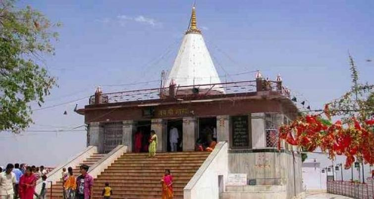Maihar Devi Temple is situated in the Satna district and is sacred to goddess Shakti, who is also known as the Sharda Devi. The Maihar Devi Temple is situated atop the Trikut Hill and to reach the main shrine, tourists will have to either climb 1603 steps or can take ropeway. Legends has it that the temple came into existence when Lord Shiva Lord Shiva was carrying the corpse of Sati, and her har (jewel) fell to the ground where the temple currently stands. The town and the temple borrow its name Maihar (necklace of the mother) Devi temple. When in Maihar, apart from the main temple, one can also visit the Chandi Devi Temple, Oila Temple, Shiva Temple of bada Akhada Maihar and Golamath Temple.